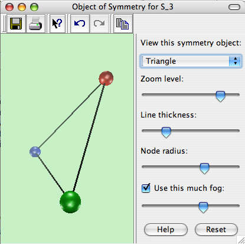

This page documents the interface for the large view of an object of symmetry. An object of symmetry is one of Group Explorer’s four visualizers, all of which can appear either in group info pages, sheets, or in their own pages. When they appear in their own pages, this is refered to as a “large view,” and you can read about it in general here. This page covers the specifics for large views of objects of symmetry.

Viewing the object
A symmetry object (unlike multiplication tables and cycle graphs) is a three-dimensional structure. Thus you can click and drag on the view to rotate it in three-dimensional space. This lets you see all sides of the object, and seeing it in motion can give you a better mental picture of it.
Choosing which object to view
Some groups have more than one object of symmetry defined for them. For this reason, the topmost portion of the control pane on the right side of a large view for symmetry objecst allows you to choose which of the symmetry objects you wish to view. You choose from a list, as shown in the picture below.

In this illustration, the triangle is selected, but the user can click on it to open a list. Some groups only have one symmetry object on this list, but others have several. Choosing one changes the view immediately.
Related interfaces
The remainder of the controls in the right side of the large window for symmetry objects are described in the help page for three-dimensional controls.